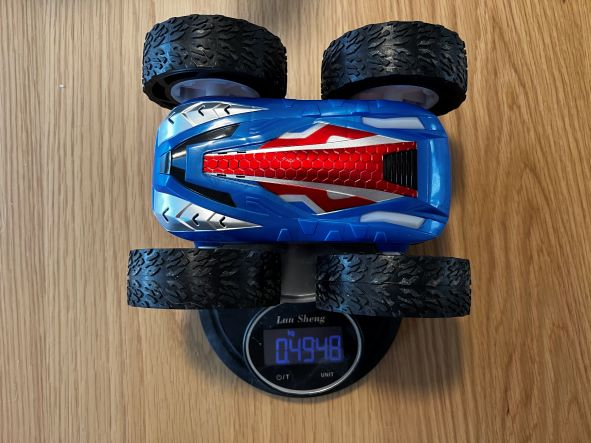
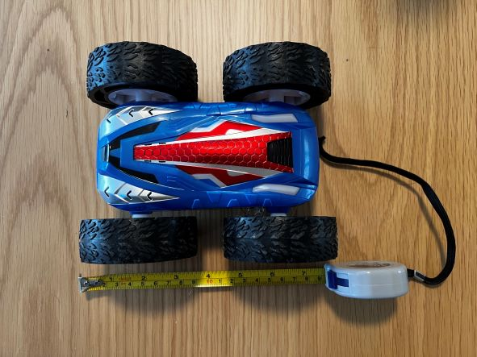
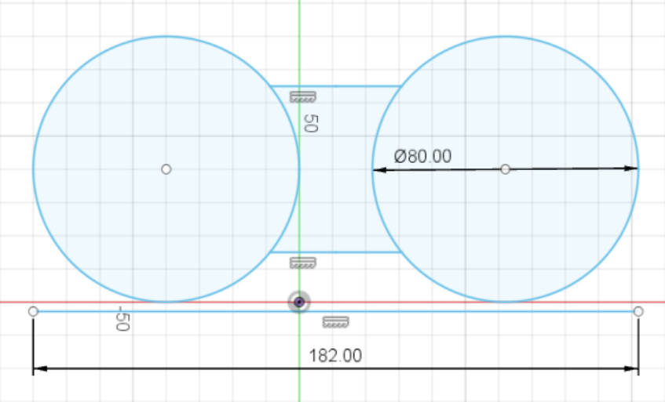
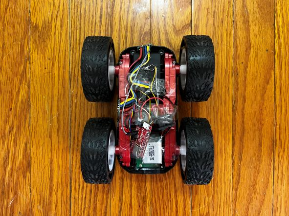
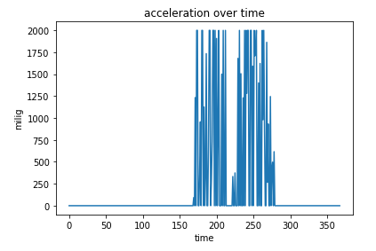

Lab Description
The purpose of this lab is to characterize the car. The characteristics I've chosen are the weight of the car, the dimensions of the car, and the acceleration of the car.
Setup
The weight of the car will be measured with a normal scale, the dimensions will be measured with a ruler, and the acceleration will be measured with the accelerometer.
Lab Sections
Part 1 Weight:
The car was weighed with a kitchen scale in units of kilograms. As can be seen below, the weight is .4948 kg.

Part 2: Dimensions
The car's dimensions were measured in millimeters using a measuring tape.

After measuring the dimensions of the car, I made a simple model on Fusion 360.

The dimensions I felt were important to measure were the car length, wheel diameter, and clearance height. The wheel circumference is then 2*pi*40mm. This comes out to be about .25 meters.
I verified this by rolling the car along the tape measure and got about .25 meters.
Part 3: Acceleration
For this part of the lab, I tried to measure the acceleration of the car using the accelerometer. This measurement was done by temporarily taping the Artemis and sensors onto the car with a battery, and sending
the IMU data to my computer using what I learned in lab 2.

However, I was not able to get good data from the accelerometer or gyro. The best I was able to get is shown below.

I am at least able to tell that the car can accelerate at least at 2g's. Part of what made this test so difficult is that I was unable to perform this indoors, and had to go out on a road to get enough space for the car
to accelerate for a decent amount of time. Outdoor roads seem to be too bumpy for this car to handle, show that smooth surfaces are likely needed for this robot. A second issue I encountered is that the car drifts strongly to the right when
under full acceleration. PID could handle this, but I think it will also be a good idea to set a speed limit on the car.
In general, the two conclusions I came to from this experiment is that my final car will have a speed limit and will be driven indoor on smooth surfaces.